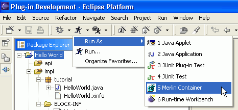

Table 1.1. features in version 0.1.0
| Create new projects / blocks with a special Merlin block nature |  |
| Create blocks out of prebuild block templates |  |
| create your own standard blocks which are shown in the "new block" wizards selection page. | |
| Run / Debug blocks |  |
| Context help for Avalon JavaDoc tags | |
| Automatic build for component meta files. Each time you save changes to your sources, all meta files will be created if required. |